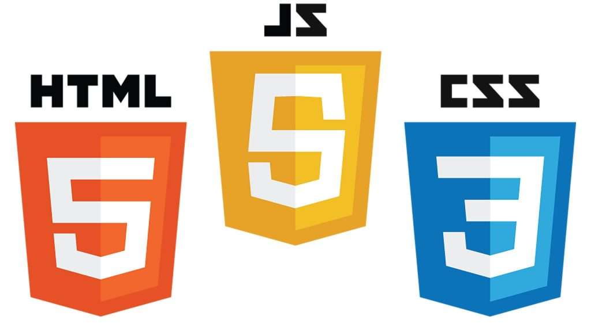
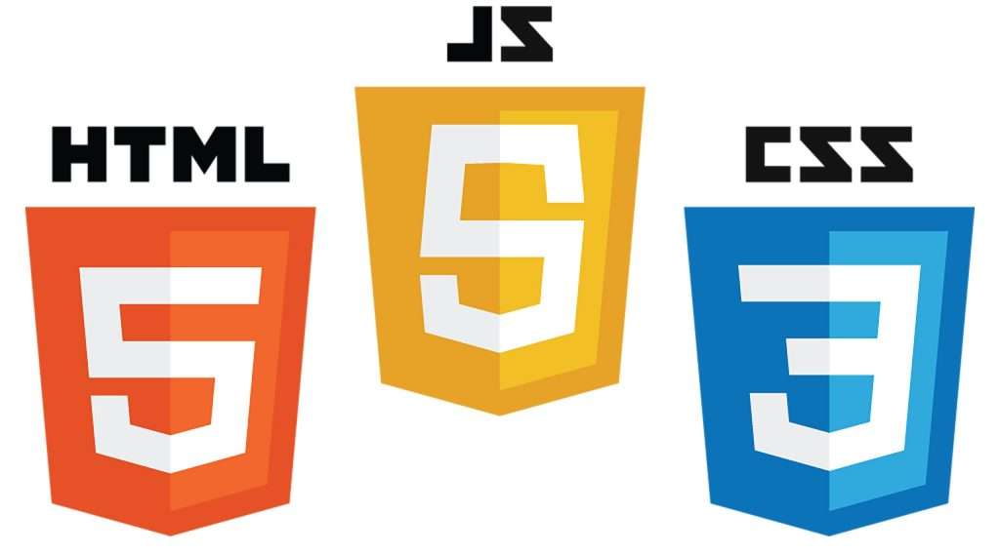

Skills
- Software Quality Assurance
- Test Automation
- Performance Testing
- Release Management
- Project Managemant
- Engineering Management
Education
MBA - Georgia Southern University (2015-2017)
 BBA Marketing -
Augusta University (1995-2000)
BBA Marketing -
Augusta University (1995-2000)
Certifications
- Certified Scrum Master (PSM 1)

Programming Languages & Tools
 
 


Experience
Director of Quality Assurance - TaxSlayer (2018-Present)
- Met delivery deadlines and maintained quality standards with a YOY estimated feature and product increase of 25% without increasing staff.
- 15% escaped bug reduction YoY for the past 3 years across multiple products by making incremental process changes.
- Implemented 60+ Playwright tests in Azure DevOps pipelines.
- Increased testing efficiency by 95% through automation of regression suites.
- Implemented a performance testing program, resulting in a 300% increase in throughput.
Project Management Director/Scrum Master - TaxSlayer (2017-2018)
- Project Manager and Scrum Master for Business Solutions and Consumer Products.
- Successfully delivered Workful state payroll conversion 2 weeks early.
- On-time and budget delivery of the TaxSlayer.com E-File process.
Director TaxSlayer Pro Project Management/Scrum Master - TaxSlayer (2014-2017)
- Managed multiple development teams across multiple interrelated products to meet project deliverables.
- Responsible for the oversight of all TaxSlayer Pro projects ensuring that capacity is properly planned, risks are identified and mitigated, requirements and design are documented.
- Acting scrum master by removing impediments to progress.
- Delivered software on-time every year.
- Responsible for Release Management of TaxSlayer Pro’s suite of products.
- Won company annual award “Most Productive Division Head 2014”.
Director of Quality Assurance / TaxSlayer, Augusta, GA (2013-2014)
- Created an Issue tracking/ticketing system using share point, to elimate paper communications.
- Coached and mentored a team of testers in testing techniques and Quality Assurance processes and methodologies.
- Collaborated with Support, Product Management and Software Development to drive changes and achieve high quality products.
- Reduced testing cycles with automated testing.
Sr. Automation Tester / Brightree, Norcross, GA (2009-2013)
- Created the Automation framework for the Brightree UI using HP Quick Test Professional and Sahi.
- Led the testing of major Brightree functions (Point of Sale, Payment on Account, ePurchasing).
- Automated API tests using SoapUI Pro (Approx. 600 tests that were not feasible for manual execution and covered 95% of code.).
Sr, QA Analyst / Checkfree/Fiserv, Norcross, GA (2007-2009)
- Converted Quality Center test cases to Business Process Tests and evaluated Business Process Test components for Automation.
- Led the automation of BPT components using Mercury QTP and FATE.
- Managed offshore resources for Automation efforts.
- Led PCI compliance efforts and security testing using IBM Rational AppScan.
Software QA Manager / NetBank, Alpharetta, GA (2006-2007)
- Led the testing and implementation of Intelligent Authentication.
- Responsible for estimating QA testing hours and resource planning.
- Configuration Management and version control of QA and UAT Voyager banking application.
- Responsible for maintaining and troubleshooting the QA and UAT environments.
- Scheduled turnover meetings for code releases to QA and production.
- Organized test results, test plans, and production change documentation for audit review.